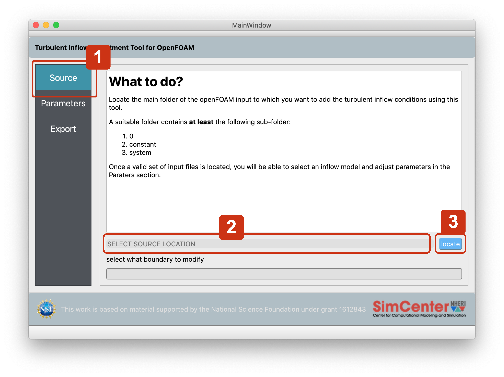
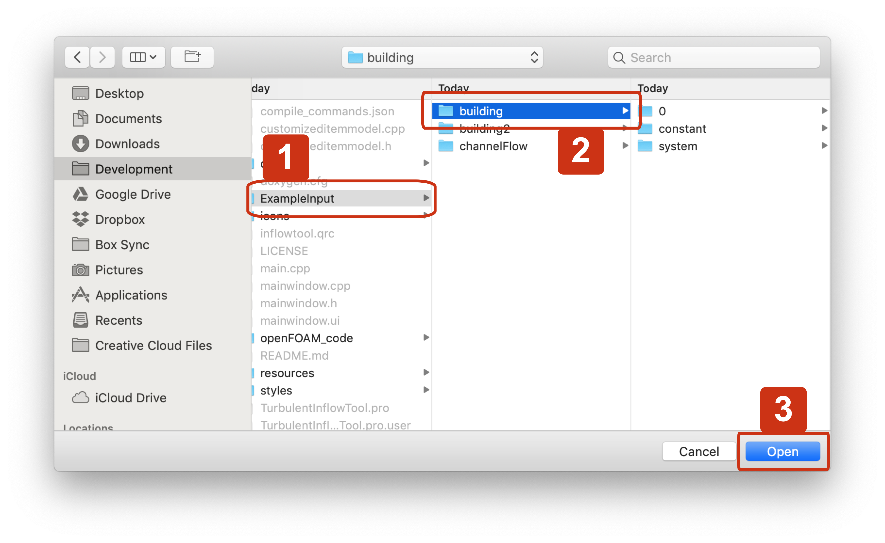
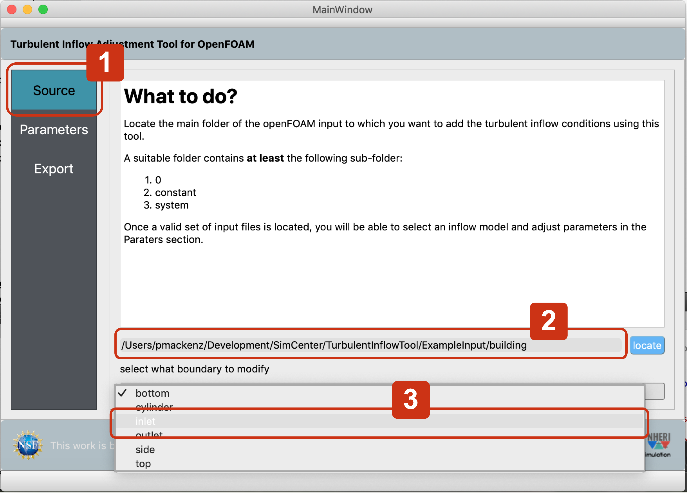
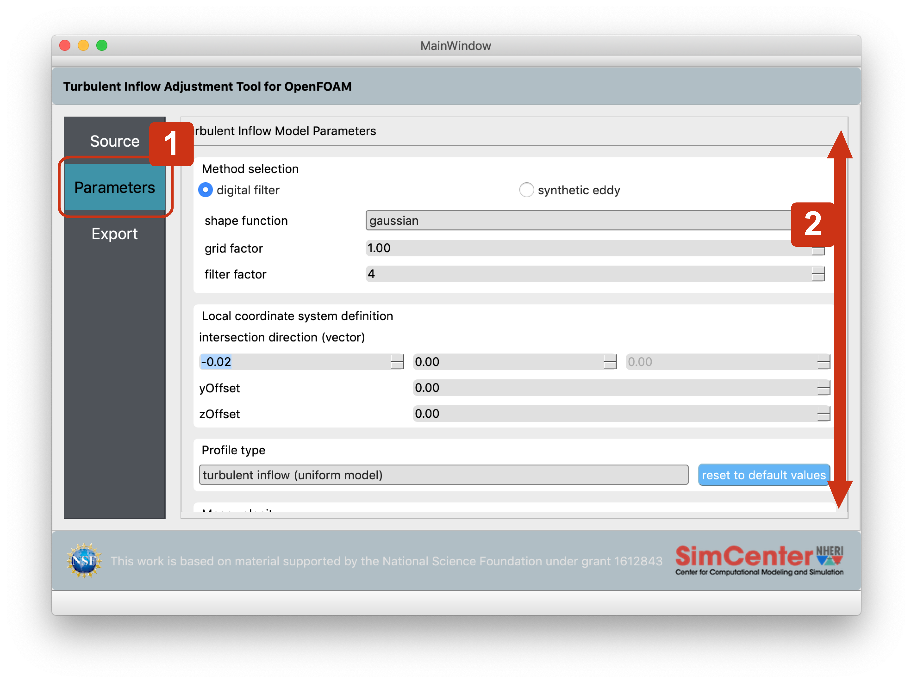
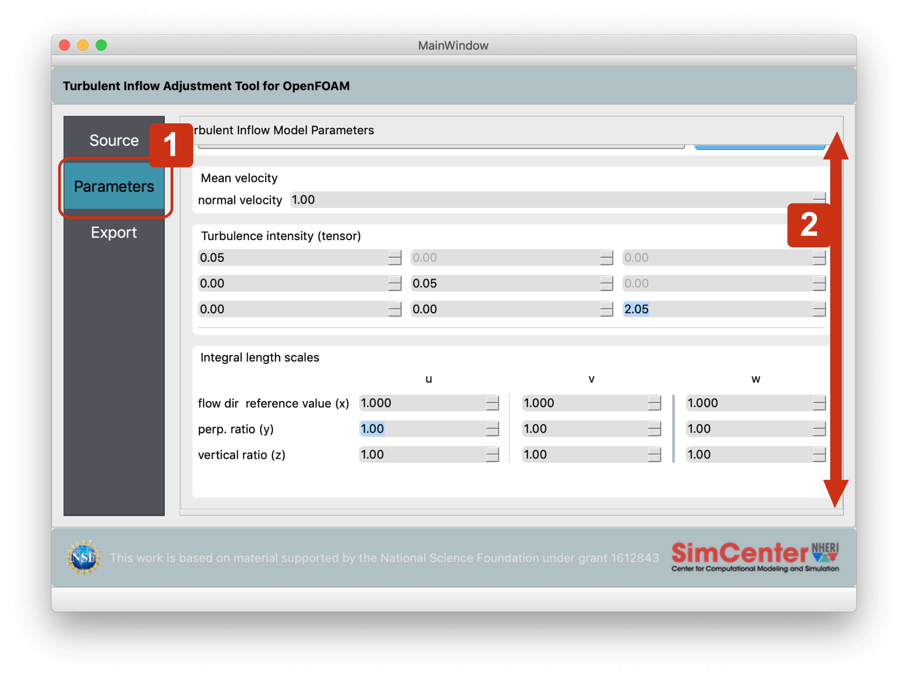
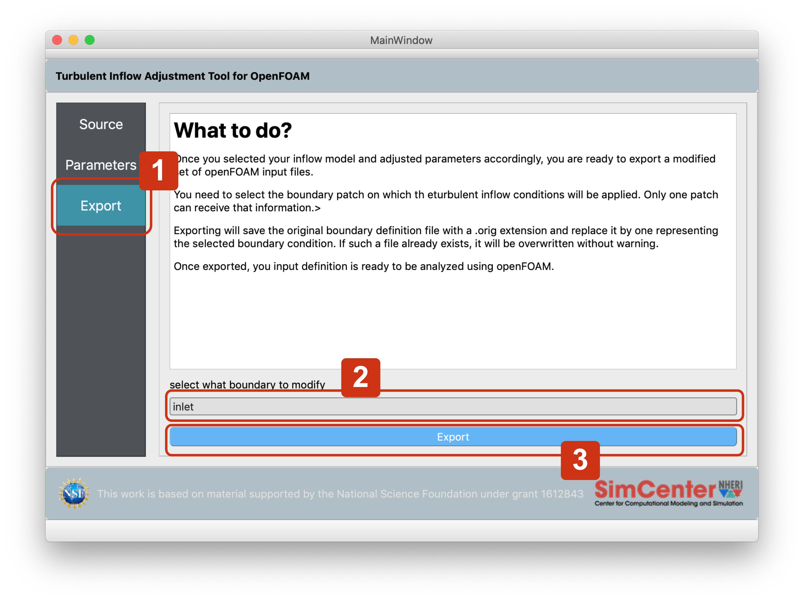

4. User Manual¶
The workflow for adding parameters for various kinds of turbulence inflow models to your OpenFOAM model is as follows.
- Step 1: Source Selection
Start the Turbulence Inflow Tool (TInF) and on the opening screen select the Source Tab (Fig. 4.1, item 1). Use the locate button (Fig. 4.1, item 3) to navigate to your OpenFOAM input tree.
Fig. 4.1 Start page - Source selection¶
Fig. 4.2 Model tree selection (MacOS version shown, but similar on Windows systems)¶
Fig. 4.2 shows a sample selection. The distribution comes with simple example input located in installed application folder. Your provided input must at least contain the folders texttt{0}, texttt{constant}, and texttt{system}. Navigate to the parent folder (Fig. 4.2, item 2) and press open (Fig. 4.2, item 3).
Fig. 4.3 Boundary patch selection¶
The tool will display your selection (Fig. 4.3, item 2), parse your boundary condition definition and provide you with a list of found boundary patches (Fig. 4.3, item 3). If your folder does not contain a parsable boundary patch definition, the folder will be displayed in red and no boundary patch selection will be offered.
Use the pull-down menu to select the proper boundary patch to which the turbulence inflow conditions will be applied.
- Step 2: Parameter Definition
In the Parameters tab (Fig. 4.4 and Fig. 4.5, item 1), first select the desired method.
Fig. 4.4 Parameter selection tab – top of page¶
Fig. 4.5 Parameter selection tab – bottom of page¶
Based on the selected method, additional parameters will be collected. The particular parameters and their meaning are discussed in detail in Chapter sec:TInF-theory. Depending on selected model and sub-options, as well as your screen size, you may need to scroll down to get access to all parameter fields (Fig. 4.4 and Fig. 4.5, item 2).
Note
the window manager on MacOS is hiding any scroll bar until you attempt to slide the parameter fields up.
Step 3: Export Changes to your Model
Once all parameters have been defined, you are ready to export the necessary changes to your model definition files.
Fig. 4.6 Export panel¶
In the Export panel (Fig. 4.6, item 1), verify that the correct boundary patch is selected (Fig. 4.6, item 2). This is the same as what is selected in the Source panel (Fig. 4.3, item 3). Actually, those fields are linked and changes to either will automatically sync the other.
Once you are certain that the correct patch has been selected, press the Export button (Fig. 4.6, item 3) to write the updated boundary definition files. Existing files will be saved to name.orig.
Warning
Only one copy of the original file will be made. Subsequent exports will treat the previously modified files as the source to be saved. Any older versions will be overwritten without further warning.